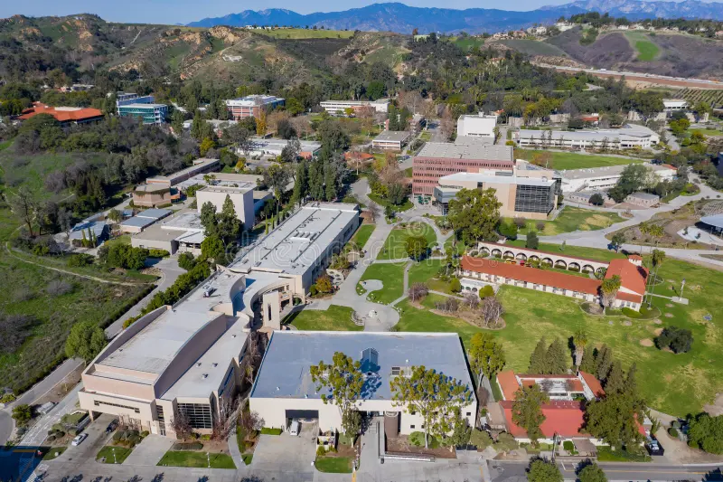

👩💻 Hello, I'm Elizabeth Dominguez
Student Programmer at Cal Poly Pomona.
At Cal Poly Pomona, I spend my time balancing academics, personal growth, and social life. I attend classes in my major, work on hands-on projects, and take advantage of opportunities to gain practical experience like internships or research.
As a student, I'm involved in student organizations and campus events, which help me connect with others and explore my interests. Outside of schoolwork, I focus on developing skills, building relationships, and preparing for my future career while making the most of my college experience.
🏫 School Campus
Culture and College Life
College life at CPP is a mix of academics, social activities, and hands-on learning. Students gain real-world experience through labs and projects, while enjoying a diverse campus community with clubs, events, and cultural activities. With sports, recreation, and plenty of spaces to study or hang out, CPP offers a balanced college experience that encourages learning, personal growth, and lasting friendships.
Take a look at the campus at CPP Map. 
Studies
- Programming
- Web Development
- Databases
Experience
Senior at Cal Poly Pomona
CS Coursework & Projects